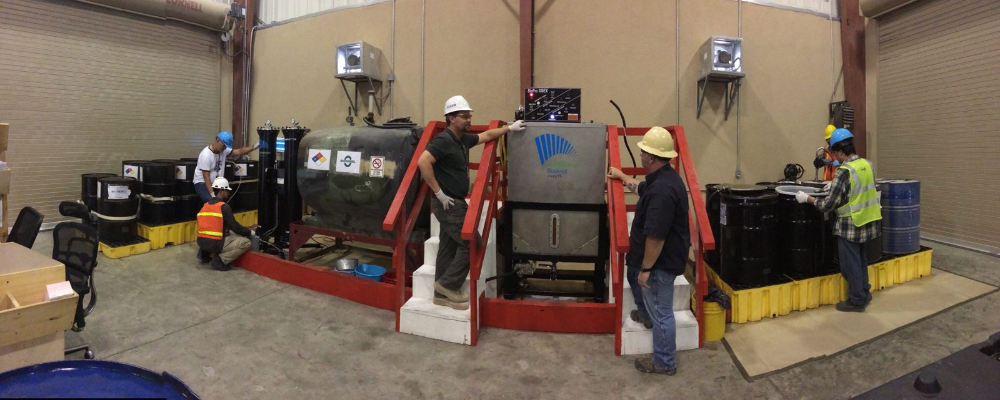

Clear enquiries
Customers can explain what material they need and what type of transport support they are looking for.
Information for manufacturers and business customers
This will measure the number of manufacturers and other potential customers who contact Ngobeni Chain Supply (NCS) about the availability, collection, transportation, or supply of fats and used cooking oil. An increase in qualified business enquiries would indicate that the website is reaching the correct target market.

Potential customers may include businesses involved in soap production, biodiesel, cosmetics, chemicals and other production processes where suitable fats or oils may be useful.
NCS can help by being a communication and transport link between suppliers and these industrial customers.
Customers can explain what material they need and what type of transport support they are looking for.
The website supports long-term B2B communication and trust between the company and potential customers. Ngobeni Chain Supply(NCS) aims to respond to online enquires within one business day
The website gives one organised place to view services, process information and contact details. The website allows users to acces important information and submit enquires or collection requests from their devices.